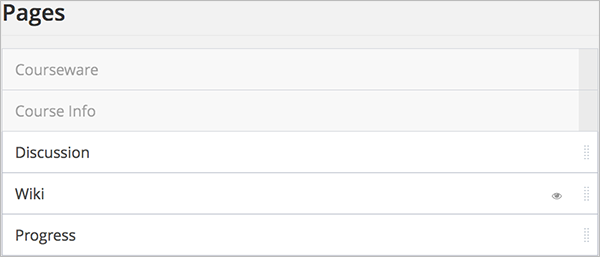
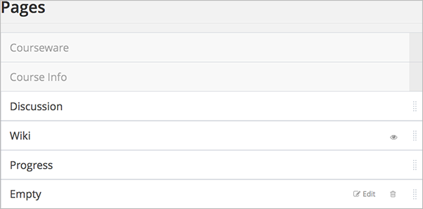
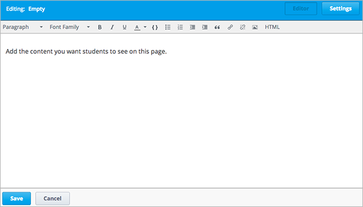

本章节描述如何为您的课程添加页面和标签。
您可以在您的课程中添加新页面。所有页面将在课程的导航栏中对所有学生显示。
如下导航栏中包含默认页面、课程表、补充材料和导师的博客页面。
您可以为评分标准、课程讲义或其他用途创建页面。 示例如下。
在Studio中的 内容 菜单点击 页面 。一个标题为 页面 的页面开启。 该页面包含课程导航栏中显示的所有页面列表。
点击 添加一个新页面。一个标题为空的新页面添加到列表中。
在新页面行中，选择 编辑 。HTML 编辑器开启。
在您的页面中输入内容
使用编辑器的详细操作，请参考 HTML组件编辑选项.
单击 设置 编辑 可见名称 。可见名称是该课程中学生可见页面的名称。
单击 保存
如果课程已经开始，新页面将立即对学生开放。
系统默认的设置中，您的课程会包含一个“维基百科”页面。 学生及课程工作人员可使用该页面发表内容评论。
如果不想在课堂上使用该页面，可将该页面隐藏。
维基 一栏中，边上的眼睛图标表示该页面在课程中可见。
单击眼睛图标，图标会发生变化，意味着该页面不可见。
再次点击，又会恢复原状。
Note
隐藏“维基”页面后，页面中的内容仍然会保留。 例如，某个学生给某个“维基百科”主题添加了书签，隐藏页面后，仍然可以用书签导航至该主题。 所有之前发表的内容在该页面隐藏后均保留，只要知道URL，所有使用EDX的学员均可访问该内容。
想要排序页面，拖拽页面标签至相应位置即可。
要移动某个页面，将鼠标悬停在页面标签右边的句柄上直至鼠标指针变成四方向箭头， 然后单击、拖拽页面到目标位置。
Note
您无法对 课件 和 课程信息 页面进行排序。
您可使用以下代码为您的课程添加动态HTML代码：
Note
将以下代码粘贴到 the visual editor 或者 raw HTML editor 页面。 请勿直接将代码粘贴到视图编辑器中。
<div class= "syllabus">
<table style="width: 100%">
<col width="10%">
<col width="15%">
<col width="10%">
<col width="30%">
<col width="10%">
<col width="15%">
<col width="10%">
<!-- Headings -->
<thead>
<td class="day"> Wk of </td>
<td class="topic"> Topic </td>
<td class="reading"> Read </td>
<td class="video"> Lecture Sequence </td>
<td class="slides"> Slides </td>
<td class="assignment"> HW/Q </td>
<td class="due"> Due </td>
</thead>
<!-- Week 1 Row 1 -->
<tr class="first">
<td class="day">10/22</td>
<td class="topic">Topic 1</td>
<td class="reading">Ch. 1</td>
<td class="video"><a href="#">L1: Title</a></td>
<td class="slides"><a href="#">L1</a></td>
<td class="assignment"><a href="#">HW 1</a></td>
<td class="due">11/04</td>
</tr>
<!-- Week 1 Row 2 -->
<tr>
<td class="day"> </td>
<td class="topic"></td>
<td class="reading"></td>
<td class="video"><a href="#">L2: Title</a></td>
<td class="slides"><a href="#">L2</a></td>
<td class="assignment"> </td>
<td class="due"> </td>
</tr>
<tr> <td class="week_separator" colspan=7> <hr/> </td> </tr>
<!-- Week 2 Row 1 -->
<tr>
<td class="day">10/29</td>
<td class="topic">Topic 2</td>
<td class="reading">Ch. 2</td>
<td class="video"> <a href="#">L3: Title<a></td>
<td class="slides"><a href="#">L3</a></td>
<td class="assignment"><a href="#">Quiz 1</a></td>
<td class="due">11/11</td>
</tr>
<!-- Week 2 Row 2 -->
<tr>
<td class="day"></td>
<td class="topic"></td>
<td class="reading"></td>
<td class="video"><a href="#">L4: Title</a></td>
<td class="slides"><a href="#">L4</a> </td>
<td class="assignment"></td>
<td class="due"></td>
</tr>
<tr> <td class="week_separator" colspan=7> <hr/> </td> </tr>
<!-- Week 3 Row 1 -->
<tr>
<td class="day">11/05</td>
<td class="topic">Topic 3</td>
<td class="reading">Ch. 3</td>
<td class="video"><a href="#">L5: Title</a></td>
<td class="slides"><a href="#">L5 </a></td>
<td class="assignment"><a href="#">HW 2</a></td>
<td class="due">11/18 </td>
</tr>
<!-- Week 3 Row 2 -->
<tr>
<td class="day"> </td>
<td class="topic"> </td>
<td class="reading"></td>
<td class="video"><a href="#">L6: Title</a></td>
<td class="slides"><a href="#">L6 </a></td>
<td class="video"></td>
<td class="assignment"></td>
<td class="due"></td>
</tr>
<tr> <td class="week_separator" colspan=7> <hr/> </td> </tr>
<!-- Week 4 Row 1 -->
<tr>
<td class="day">11/12</td>
<td class="topic">Topic 4</td>
<td class="reading">Ch. 4</td>
<td class="video"><!--<a href="#">L7: Title</a>--> L7: Title</td>
<td class="slides"><!--<a href="#">L7</a>-->L7</td>
<td class="assignment"><!--<a href="#">Quiz 2</a>-->Quiz 2</td>
<td class="due"> 11/25 </td>
</tr>
<!-- Week 4 Row 2 -->
<tr>
<td class="day"></td>
<td class="topic"></td>
<td class="reading"></td>
<td class="video"><!--<a href="#">L8: Title</a>-->L8: Title</td>
<td class="slides"><!--<a href="#">L8</a>-->L8</td>
<td class="assignment"></td>
<td class="due"></td>
</tr>
<tr> <td class="week_separator" colspan=7> <hr/> </td> </tr>
<!-- Week 5 Row 1 -->
<tr>
<td class="day">11/19</td>
<td class="topic">Topic 5</td>
<td class="reading">Ch. 5</td>
<td class="video"><!--<a href="#">L9: Title</a>-->L9: Title</td>
<td class="slides"><!--<a href="#">L9</a>-->L9</td>
< td class="assignment"><!--<a href="#">HW 3</a>-->HW 3</td>
<td class="due"> 12/02 </td>
</tr>
<!-- Week 5 Row 2 -->
<tr>
<td class="day"></td>
<td class="topic"></td>
<td class="reading"></td>
<td class="video"><!--<a href="#">L10: Title</a>-->L10: Title</td>
<td class="slides"><!--<a href="#">L10</a>-->L10 </td>
<td class="assignment"></td>
<td class="due"></td>
</tr>
<tr> <td class="week_separator" colspan=7> <hr/> </td> </tr>
<!-- Week 6 Row 1 -->
<tr>
<td class="day">11/26</td>
<td class="topic">Topic 6</td>
<td class="reading">Ch. 6</td>
<td class="video"><!--<a href="#"><L11: Title</a>-->L11: Title </td>
<td class="slides"><!--<a href="#">L11</a>-->L11</td>
<td class="assignment"><!--<a href="#">HW 4</a>-->HW 4</td>
<td class="due">12/09</td>
</tr>
<!-- Week 6 Row 2 -->
<tr>
<td class="day"> </td>
<td class="topic"> </td>
<td class="reading"></td>
<td class="video"><!--<a href="#">L12: Title</a>-->L12: Title</td>
<td class="slides"><!--<a href="#">L12</a>-->L12</td>
<td class="assignment"></td>
<td class="due"> </td>
</tr>
</table>
</div>
{kind=link}
{kind=link}
{kind=link}
{kind=link}